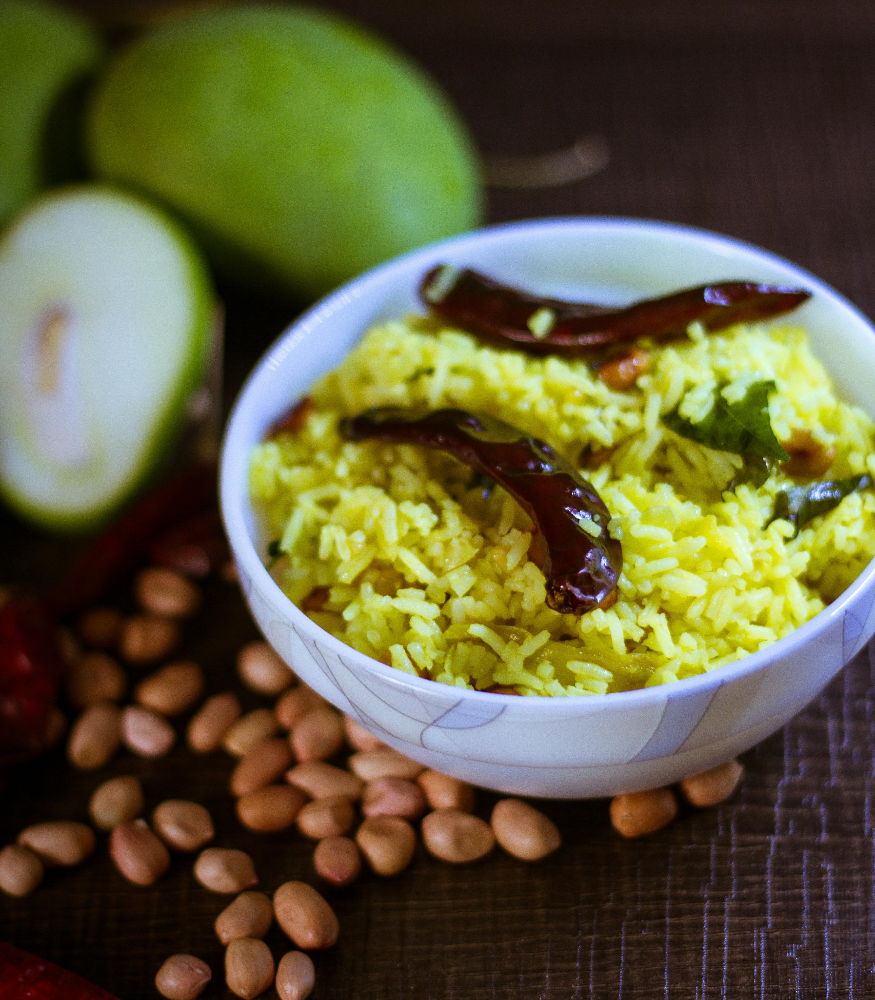

Ingredients
- 1 cup basmati rice (you can also use any other long-grain rice)
- 1 ripe mango, peeled and diced
- 2 tablespoons oil (coconut oil or vegetable oil)
- 1 teaspoon mustard seeds
- 1 teaspoon urad dal (split black gram)
- 1 teaspoon chana dal (split chickpeas)
- 2-3 dry red chilies, broken into pieces
- A pinch of asafoetida (hing)
- 1/2 teaspoon turmeric powder
- Salt to taste
- Fresh curry leaves
- 2 tablespoons grated coconut (optional)
- Chopped coriander leaves for garnish
Process
- Cook the rice using your preferred method (boiling, rice cooker, etc.) and let it cool down slightly
- In a pan, heat the oil over medium heat
- Add mustard seeds and let them splutter
- Add urad dal, chana dal, broken red chilies, and a pinch of asafoetida. Sauté until the dals turn golden brown
- Add turmeric powder and fresh curry leaves to the pan. Stir well
- Add the diced mango pieces and sauté for a couple of minutes until the mango softens slightly
- Add salt to taste and mix everything well
- Turn off the heat and add the cooked rice to the pan. Gently mix the rice with the mango mixture until well combined
- Optionally, add grated coconut to the mango rice for extra flavor and texture
- Garnish with chopped coriander leaves before serving
- Mango rice is best enjoyed fresh and can be served as a main dish or as a side dish with yogurt or a pickle